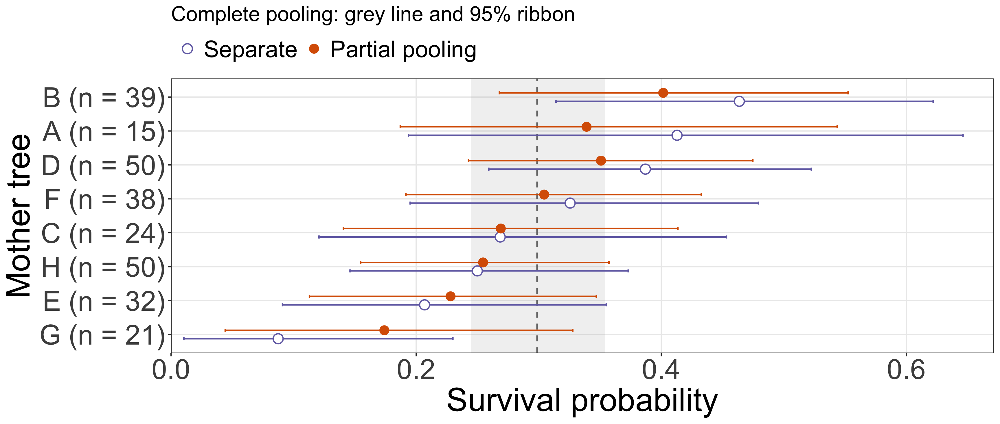
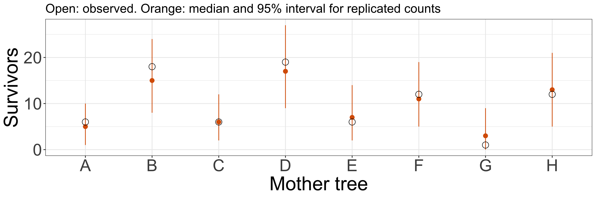

Three ways of estimating survival

Points: posterior means. Intervals: 95% credible.
Complete and separate models use Beta(1,1) probability priors, whereas partial pooling uses the Normal logit group prior with estimated centre and SD. State this difference. It is an illustrative model comparison, not an isolation of pooling under identical marginal priors. All code and priors are in the handout. The grey line and ribbon show the single complete-pooling posterior, shared by all trees. Only separate and partial estimates are repeated by tree. The grey line is a comparison reference, not the exact target of hierarchical shrinkage. Rows are ordered by the separate posterior means, with the largest at the top. n is the seedling count. Separate and Partial pooling are vertically dodged within each tree so their 95% intervals can be compared. Separate is always an open purple circle; Partial pooling is always a filled orange circle. The next slide retains those encodings and reveals the generating probabilities on a 1:1 scatterplot. The separate model is the no-pooling model from earlier.
Does sharing information improve the estimates?
Tree A: 0.41 → 0.34; true probability = 0.30.
Read x as the generating probability and y as the posterior mean. The square panel has identical axis scales; its dashed 1:1 line represents agreement with the truth. Vertical connections show the direction and amount of movement from Separate to Partial pooling. The connections are drawn behind the points. Each tree’s true probability is explicitly joined by tree ID, not by row order. F has true p=0.25 and D has true p=0.36. Several trees share the same true probability, so some trajectories overlap. Both axes are restricted to 0.2–0.5; Tree G estimates fall below this window.
Follow labelled Tree A: n=15, separate posterior mean 0.41, partial-pooling mean 0.34 and generating probability 0.30. Movement depends on n, extremity and the inferred group distribution. Separate points remain posterior means under independent Beta(1,1) priors, not observed proportions or MLEs. Do not claim that sharing information always improves every estimate or that one simulated data set establishes general performance. In real data, truth is unknown. Use this comparison as a visual illustration, not an exact error calculation. Read these results before the activity. If short of time, focus on Tree A and the point that information sharing does not guarantee improvement.
Can the model reproduce the observed counts?
\widetilde{s}_j\sim\operatorname{Binomial}(n_j,p_j),\qquad
p_j\text{ drawn from the posterior}

Keep each tree’s seedling count fixed.counts , not uncertainty in a probability.
This is the mother-tree intercept-only model from the handout, before adding a density predictor. For each posterior draw, generate binomial survivor counts using the observed n_j and sampled p_j. Open circles are observed survivor counts; orange points/intervals show replicated-count medians and 95% predictive intervals. Read the generation and plotting code in the handout alongside this figure. It checks compatibility with observations, not MCMC convergence. Numerical sampling diagnostics and traces are covered separately in the same handout. Inspect which trees look poorly reproduced, while recognizing that agreement in this in-sample check does not establish adequacy of every model assumption.
From an intercept-only model to regression
So far: intercept only
\operatorname{logit}(p_j)=\alpha_j
Now: intercept + density effect
\operatorname{logit}(p_{ij})=\alpha_j+{\color{#d95f02}{\beta_j x_{ij}}}
Shared priors across species
\begin{aligned}
\alpha_j&\sim\mathcal{N}(\mu_\alpha,\sigma_\alpha)\\
\beta_j&\sim\mathcal{N}(\mu_\beta,\sigma_\beta)
\end{aligned}
Shared priors let species share information: this is a hierarchical model.
Model progression and selected code. The main transition is from a model without a density predictor to a regression that includes density, not from mother trees to species. Strictly, the earlier model is already an intercept-only logistic regression.
So far, each group had one survival probability. We did not include a predictor that could explain variation in survival within a group. Now bring back Day 2’s question: how does survival change with conspecific density? Adding density gives each group a curve, with an intercept and a density coefficient. The orange term is the addition to the model. i indexes observations within group j, and x_ij is scaled conspecific density. Both models retain a binomial observation model (or Bernoulli for individual seedlings).
The information-sharing idea still applies: group regression coefficients can be connected through shared distributions. Their hyperparameters also need priors in a full model. The curves alone do not demonstrate fitted pooling. Point from the species curves to alpha_j and beta_j, then to their shared priors. As in the mother-tree model, the shared means and SDs are unknown and estimated jointly with the group coefficients. Normal’s second argument is SD. The displayed priors describe marginal variation across species; they do not require independent intercepts and slopes. A joint multivariate Normal can have these marginals while allowing correlation, as noted on the varying-slope slide. This is the same prior-to-hierarchy connection as main.qmd slide 37, now with the binomial/logit model used here rather than a new Normal response model.
For this application the groups are species rather than mother trees. Each coloured curve represents a species. This is the seeded conceptual example from main.qmd, not fitted species effects for Day 2’s data or a numerical reproduction of either paper. It uses a different simulated data set, and does not add density to the eight mother-tree data.
First: varying intercepts, a common slope
Species can differ in baseline survival while sharing a density coefficient.
\operatorname{logit}(p_{ij})=\alpha_j+\beta x_{ij}
Selected model lines:
The index on alpha changes the intercept used for each observation. beta is shared by all species.
A conceptual CNDD extension, not executable code for the saved mother-tree fit. Declarations, loops and the remaining priors are omitted from these selected lines. group[i] maps observation i to species j, x is scaled density, n is the seedling count and suv is the survivor count. The likelihood is still binomial. The Normal group prior is shown in centered form so the model structure is easy to read; an equivalent non-centered representation can also be used. These curves need not be parallel on the probability scale. The shared slope is a common change in log-odds per unit density. Do not introduce a new fit. This is the idea in section 4 of the original exercise.qmd, adapted from Normal log-height regression to binomial survival regression.
Then: varying intercepts and slopes
Species may also differ in their response to density.
\operatorname{logit}(p_{ij})=\alpha_j+\beta_j x_{ij}
Both coefficients vary by species and have shared group distributions.
Note: The group priors for \alpha and \beta are independent here for simplicity.multivariate normal distribution to model them together.
Selected conceptual model lines, with declarations, loops and hyperpriors omitted. For this first explanation, the intercept and slope distributions are conditionally independent given their hyperparameters. The visible note explains that a multivariate Normal group prior can allow correlations between intercepts and slopes across species. This is distinct from posterior dependence induced by the likelihood, which can occur even with independent group priors. Do not claim this excerpt is identical to vslope.stan, which uses a multivariate, non-centered parameterization with correlations. Ask: what changed from beta to beta[group[i]], and where is information shared? No participant implementation is required. This is the model idea in original exercise.qmd section 6; Cholesky/LKJ derivations are outside the core session.
Can abundance explain slope differences?
The expected density coefficient can depend on species abundance a_j .
\beta_j\sim\mathcal{N}(\gamma_0+\gamma_1 a_j,\tau_\beta)
Density varies among observations. Abundance describes the species. The group model still allows unexplained differences among species.
i indexes seedlings and j species here. The response is Bernoulli per seedling, or binomial when counts share the same predictors. a_j is scaled species abundance. The group SD tau_beta and all coefficients require priors in a full analysis. This extends the varying-slope model: a group-level predictor explains its expected slope, while tau_beta describes remaining between-species variation. This is the model idea in original exercise.qmd section 7. The code is a conceptual excerpt, not a new fitted research model or implementation exercise.